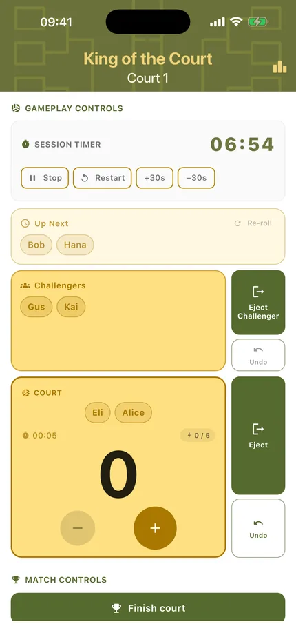
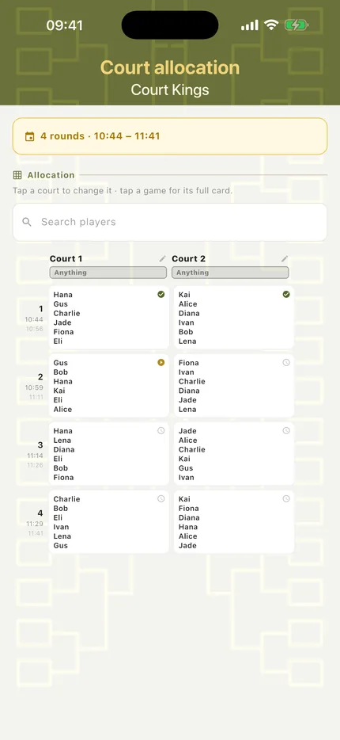
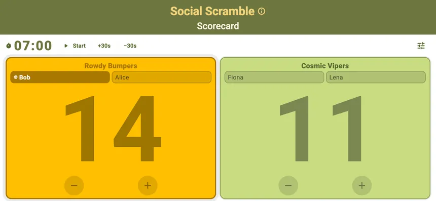
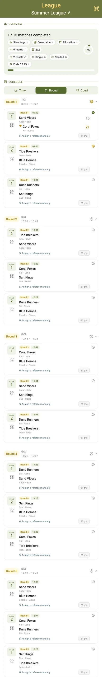
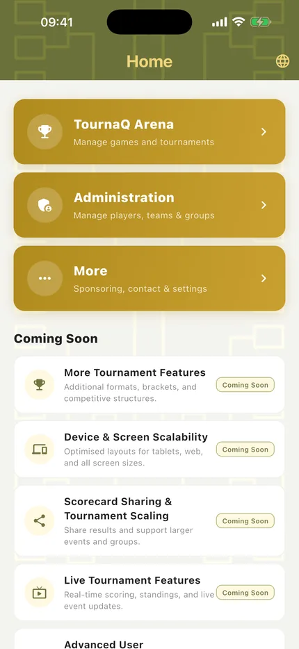
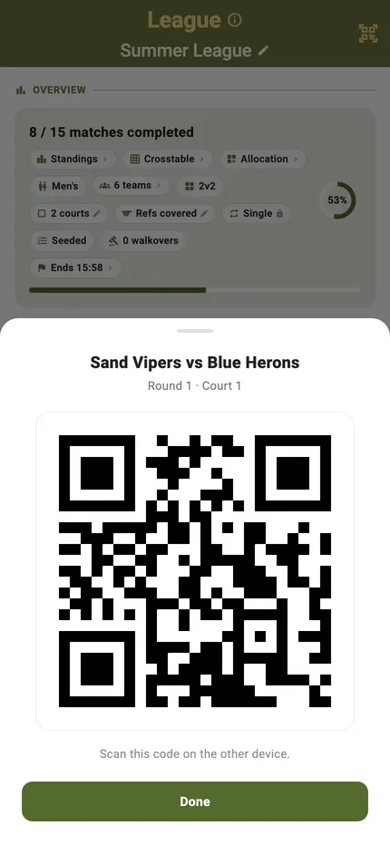

Device & Screen

TournaQ is a phone app first, because that is what is actually at the side of a court. Every screen is built for one-handed use, and every scorecard rotates to landscape for a net post or a table.
It works with no signal at all. Data lives on the device, so a beach with no reception is a normal working environment rather than a problem to plan around.
Best for
- Scoring outdoors with one hand and no reception
- Propping a phone on a net post in landscape
- Long screens — schedules and brackets — on a small display
Built for one hand
The controls that matter during a rally sit where a thumb reaches, on the device you already have with you.
Scoring
Big targets, the serving side marked, undo within reach. Everything else on the card is secondary to the two buttons you press forty times a set.
Running the session
Progress, settings and the schedule on one screen, so the organiser's view is a phone screen rather than a spreadsheet.

Court allocation
The whole plan — every round against every court — legible on a phone rather than requiring a laptop.

Turn it sideways
Every scorecard rotates. In landscape the numbers get bigger and the layout suits a phone propped on a post, where it is read from two metres away rather than held.
A quick game, rotated
The same match, laid out for a net post. Nothing is hidden — the layout changes, the functions do not.

A rotation format, rotated
The court, the score and the controls, sized to be read from the sideline.

A bracket match, rotated
Same again under a knockout tie — one layout learned once, used everywhere.

When the screen is smaller than the content
A fifteen-match schedule or a full bracket is longer than any phone. Rather than shrink it to nothing, TournaQ lets it scroll.

A whole league fixture list
Every fixture, every court, every time slot — several screens of it, scrolled rather than squeezed. The same page on a tablet simply shows more of it at once.

A bracket that pans and zooms
Brackets and crosstables get their own canvas: pinch to zoom, drag to pan, and tap a team to trace its path. A structure that needs width gets width, instead of being folded into a list.
No signal, no account
Everything above works with the phone in aeroplane mode. That is a design decision, not a limitation.

It lives on the device
Tournaments, players and results are stored locally. There is no sign-up, no sync to wait for and nothing to lose when the reception goes — which on a beach it will.

Sharing without a network
When something does need to move, it moves directly: a QR code between two phones, or an exported file. Nothing is uploaded anywhere.
Every device feature
Phone support ships today. Dedicated large-screen and cast-to-display layouts are on the way.
-
Available
Mobile-first design
Optimised for use on smartphones. Touch targets, layout, and navigation are designed for one-handed use during a live match.
-
Available
Offline-first local storage
All match data is stored on-device using local storage. TournaQ works fully without an internet connection — no signal required on court.
-
Available
Portrait & landscape orientation
The scoring interface adapts to both portrait and landscape orientations to suit different holding preferences and device types.
-
Planned
Large screen tournament view
A dedicated layout for larger screens that shows multiple courts or full bracket views simultaneously — designed for tournament control rooms.
-
Planned
Cast to display
Project the live scoreboard or bracket view to an external screen or TV at the venue — for spectators and team benches.
Using TournaQ on a device that does not suit it? Tell us what you are running it on.